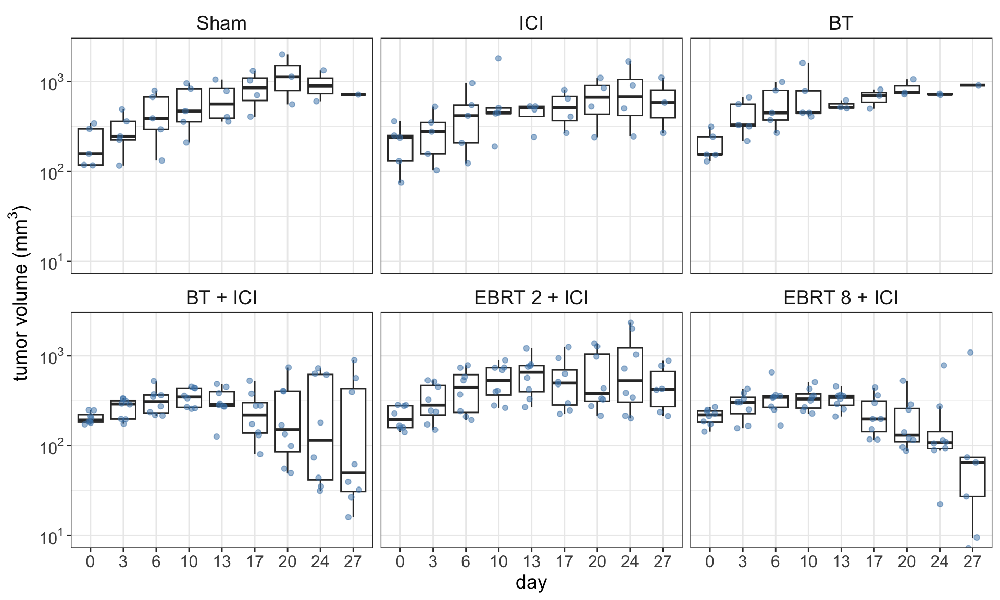
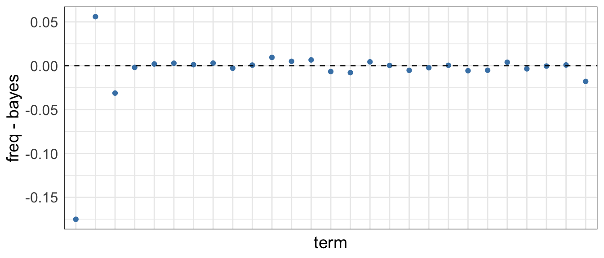
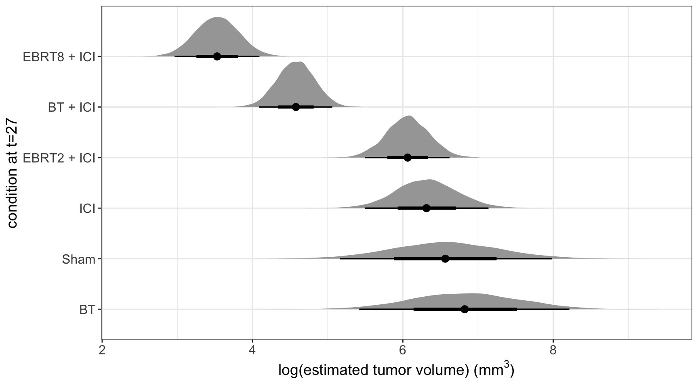

Tumor volume models with Stan
generalized linear models
stan
cancer
I have been attending many meetings, where collaborators presents tumor growth curves, and my curiosity got the best of me, so I decided to explore how these models work, and explore how to use Stan and fit a Bayesian model for the problem.
Reading the methods section of Jagodinsky et al. (2024), it says that:
“for tumor growth analysis, a linear mixed model after log transformation of tumor volume was fitted on treatment and day. Day and the interaction between treatment and day were fixed effects”
which means that they used a model like:
\[ \log(y_{ijk}) = \mu + \beta_i^\text{treatment} + \gamma_j^\text{time} + (\beta \cdot \gamma)_{ij}^{\text{interaction}} + u_i + \varepsilon_{ijk} \]
where the indexes correspond to treatment \(i=1,\cdots, I\), time \(t_j\in \{t_1 < t_2 <\cdots < t_J\}\) and \(k=1,\cdots,m_{ij}\) are the mice alive for treatment \(i\) at time \(t_j\). In this model, the fixed effects are:
- \(\beta_i^\text{treatment}\): treatment effect for group \(i\)
- \(\gamma_j^\text{time}\): time effect for time point \(t_j\)
- \((\beta \cdot \gamma)_{ij}^\text{interaction}\): interaction effect between group \(i\) and time point \(t_j\)
then, the random variables are:
- \(u_i \sim N(0, \tau^2)\): is the group random error
- \(\varepsilon_{ijk} \sim N(0, \sigma^2)\): the error for the model
We are going to use the data from Jagodinsky et al. (2024) for Figure 1 that is available with the article. Figure 1 shows the distribution of the tumor volume for each treatment group. We can see that there are some outliers at the later time points. Moreover, it seems that there is a decreasing trend in two of the groups in the bottom row.
At the end, the formula for this experiment is a variation of the following:
log1p(tumor_volume) ~ 1 + group + day + (day * group) + (1 | group)
Fitting the linear mixed effect model with lme4
This is straightforward, we used the same formula in the model below:
linear_mod <- lmer(
formula = log1p(tumor_volume) ~ 0 + group + day + (day * group) + (1 | group),
data = rawdata)the output of this model is given by:
| term | estimate | std.error | statistic | df | p.value | |
|---|---|---|---|---|---|---|
| groupSham | 5.23 | 0.38 | 13.75 | 2.59 × 10−9 | 1.00 × 100 | |
| groupICI | 5.22 | 0.38 | 13.72 | 2.59 × 10−9 | 1.00 × 100 | |
| groupBT | 5.24 | 0.38 | 13.77 | 2.59 × 10−9 | 1.00 × 100 | |
| groupBT + ICI | 5.31 | 0.33 | 16.23 | 1.42 × 10−9 | 1.00 × 100 | |
| groupEBRT 2 + ICI | 5.32 | 0.33 | 16.26 | 1.42 × 10−9 | 1.00 × 100 | |
| groupEBRT 8 + ICI | 5.35 | 0.33 | 16.33 | 1.42 × 10−9 | 1.00 × 100 | |
| day3 | 0.32 | 0.45 | 0.72 | 2.63 × 102 | 4.70 × 10−1 | |
| day6 | 0.72 | 0.45 | 1.60 | 2.63 × 102 | 1.12 × 10−1 | |
| day10 | 0.96 | 0.45 | 2.14 | 2.63 × 102 | 3.29 × 10−2 | * |
| day13 | 1.15 | 0.48 | 2.41 | 2.63 × 102 | 1.67 × 10−2 | * |
| day17 | 1.44 | 0.48 | 3.03 | 2.63 × 102 | 2.73 × 10−3 | * |
| day20 | 1.75 | 0.52 | 3.39 | 2.63 × 102 | 8.18 × 10−4 | * |
| day24 | 1.57 | 0.59 | 2.64 | 2.63 × 102 | 8.84 × 10−3 | * |
| day27 | 1.34 | 0.78 | 1.73 | 2.63 × 102 | 8.51 × 10−2 | |
| groupICI:day3 | −0.05 | 0.63 | −0.08 | 2.63 × 102 | 9.32 × 10−1 | |
| groupBT:day3 | 0.39 | 0.63 | 0.61 | 2.63 × 102 | 5.39 × 10−1 | |
| groupBT + ICI:day3 | −0.08 | 0.57 | −0.14 | 2.63 × 102 | 8.90 × 10−1 | |
| groupEBRT 2 + ICI:day3 | 0.05 | 0.57 | 0.09 | 2.63 × 102 | 9.29 × 10−1 | |
| groupEBRT 8 + ICI:day3 | −0.05 | 0.57 | −0.09 | 2.63 × 102 | 9.30 × 10−1 | |
| groupICI:day6 | −0.06 | 0.63 | −0.10 | 2.63 × 102 | 9.21 × 10−1 | |
| groupBT:day6 | 0.28 | 0.63 | 0.45 | 2.63 × 102 | 6.55 × 10−1 | |
| groupBT + ICI:day6 | −0.31 | 0.57 | −0.53 | 2.63 × 102 | 5.94 × 10−1 | |
| groupEBRT 2 + ICI:day6 | −0.04 | 0.57 | −0.08 | 2.63 × 102 | 9.38 × 10−1 | |
| groupEBRT 8 + ICI:day6 | −0.28 | 0.57 | −0.50 | 2.63 × 102 | 6.20 × 10−1 | |
| groupICI:day10 | 0.05 | 0.63 | 0.08 | 2.63 × 102 | 9.35 × 10−1 | |
| groupBT:day10 | 0.25 | 0.63 | 0.40 | 2.63 × 102 | 6.90 × 10−1 | |
| groupBT + ICI:day10 | −0.44 | 0.57 | −0.77 | 2.63 × 102 | 4.45 × 10−1 | |
| groupEBRT 2 + ICI:day10 | −0.06 | 0.57 | −0.11 | 2.63 × 102 | 9.11 × 10−1 | |
| groupEBRT 8 + ICI:day10 | −0.52 | 0.57 | −0.91 | 2.63 × 102 | 3.65 × 10−1 | |
| groupICI:day13 | −0.31 | 0.67 | −0.46 | 2.63 × 102 | 6.46 × 10−1 | |
| groupBT:day13 | −0.09 | 0.70 | −0.13 | 2.63 × 102 | 9.00 × 10−1 | |
| groupBT + ICI:day13 | −0.75 | 0.59 | −1.27 | 2.63 × 102 | 2.06 × 10−1 | |
| groupEBRT 2 + ICI:day13 | −0.11 | 0.59 | −0.19 | 2.63 × 102 | 8.50 × 10−1 | |
| groupEBRT 8 + ICI:day13 | −0.72 | 0.59 | −1.21 | 2.63 × 102 | 2.27 × 10−1 | |
| groupICI:day17 | −0.47 | 0.67 | −0.70 | 2.63 × 102 | 4.86 × 10−1 | |
| groupBT:day17 | −0.19 | 0.70 | −0.28 | 2.63 × 102 | 7.82 × 10−1 | |
| groupBT + ICI:day17 | −1.39 | 0.59 | −2.35 | 2.63 × 102 | 1.95 × 10−2 | * |
| groupEBRT 2 + ICI:day17 | −0.58 | 0.59 | −0.97 | 2.63 × 102 | 3.31 × 10−1 | |
| groupEBRT 8 + ICI:day17 | −1.43 | 0.59 | −2.41 | 2.63 × 102 | 1.68 × 10−2 | * |
| groupICI:day20 | −0.60 | 0.70 | −0.85 | 2.63 × 102 | 3.94 × 10−1 | |
| groupBT:day20 | −0.27 | 0.73 | −0.37 | 2.63 × 102 | 7.11 × 10−1 | |
| groupBT + ICI:day20 | −1.91 | 0.63 | −3.05 | 2.63 × 102 | 2.54 × 10−3 | * |
| groupEBRT 2 + ICI:day20 | −0.83 | 0.63 | −1.33 | 2.63 × 102 | 1.85 × 10−1 | |
| groupEBRT 8 + ICI:day20 | −1.97 | 0.63 | −3.14 | 2.63 × 102 | 1.89 × 10−3 | * |
| groupICI:day24 | −0.30 | 0.76 | −0.39 | 2.63 × 102 | 6.96 × 10−1 | |
| groupBT:day24 | −0.23 | 0.84 | −0.27 | 2.63 × 102 | 7.88 × 10−1 | |
| groupBT + ICI:day24 | −1.90 | 0.69 | −2.74 | 2.63 × 102 | 6.48 × 10−3 | * |
| groupEBRT 2 + ICI:day24 | −0.47 | 0.69 | −0.68 | 2.63 × 102 | 4.99 × 10−1 | |
| groupEBRT 8 + ICI:day24 | −2.08 | 0.69 | −3.02 | 2.63 × 102 | 2.82 × 10−3 | * |
| groupICI:day27 | −0.24 | 0.93 | −0.26 | 2.63 × 102 | 7.97 × 10−1 | |
| groupBT:day27 | 0.23 | 1.10 | 0.21 | 2.63 × 102 | 8.35 × 10−1 | |
| groupBT + ICI:day27 | −2.08 | 0.85 | −2.43 | 2.63 × 102 | 1.57 × 10−2 | * |
| groupEBRT 2 + ICI:day27 | −0.60 | 0.87 | −0.70 | 2.63 × 102 | 4.86 × 10−1 | |
| groupEBRT 8 + ICI:day27 | −3.16 | 0.87 | −3.64 | 2.63 × 102 | 3.24 × 10−4 | * |
and the table shows that few of the coefficients are significantly different from zero. Moreover, the tumor volume can be calculated by adding term estimates, for example the tumor volume of EBRT 8 + ICI treatment at the 27\(^\text{th}\) day is:
exp(5.35 + 1.34 - 3.16) - 1[1] 33.12397Fitting the linear mixed effect model with brms
Now to use brms, we can utilize the same formula but we have to define the priors:
bayes_mod <- brms::brm(
formula = log1p(tumor_volume) ~ 0 + group + day + (day * group) + (1 | group),
data = rawdata,
family = gaussian(),
chains = 5,
cores = 1,
file = here::here("posts/2025-03-24-tumor-growth-models-stan/",
"tumor_growth"),
iter = 3000, warmup = 1000)By default, this model uses flat priors for all the coefficients in the linear model, and the std. deviations of the random effects and error coefficients follow a student’s t with 3 degrees of freedom and 2.5 as the scale parameter. Below is the brms output, and the x is when the 0 is outsize of the credible interval:
| term | estimate | std.error | conf.low | conf.high | |
|---|---|---|---|---|---|
| groupSham | 5.41 | 2.34 | 0.72 | 11.22 | x |
| groupICI | 5.17 | 2.09 | 0.36 | 9.79 | x |
| groupBT | 5.27 | 2.06 | 0.77 | 9.66 | x |
| groupBTPICI | 5.29 | 1.98 | 0.42 | 9.51 | x |
| groupEBRT2PICI | 5.29 | 2.02 | 0.52 | 9.47 | x |
| groupEBRT8PICI | 5.32 | 1.88 | 1.08 | 9.49 | x |
| day3 | 0.33 | 0.44 | −0.54 | 1.20 | |
| day6 | 0.71 | 0.44 | −0.14 | 1.62 | |
| day10 | 0.96 | 0.45 | 0.08 | 1.83 | x |
| day13 | 1.14 | 0.47 | 0.24 | 2.06 | x |
| day17 | 1.44 | 0.48 | 0.52 | 2.38 | x |
| day20 | 1.76 | 0.52 | 0.75 | 2.78 | x |
| day24 | 1.56 | 0.60 | 0.40 | 2.78 | x |
| day27 | 1.33 | 0.79 | −0.18 | 2.87 | |
| groupICI:day3 | −0.06 | 0.63 | −1.31 | 1.16 | |
| groupBT:day3 | 0.38 | 0.63 | −0.84 | 1.62 | |
| groupBTPICI:day3 | −0.07 | 0.56 | −1.20 | 1.02 | |
| groupEBRT2PICI:day3 | 0.05 | 0.57 | −1.07 | 1.15 | |
| groupEBRT8PICI:day3 | −0.04 | 0.57 | −1.17 | 1.06 | |
| groupICI:day6 | −0.06 | 0.62 | −1.30 | 1.14 | |
| groupBT:day6 | 0.29 | 0.64 | −1.00 | 1.55 | |
| groupBTPICI:day6 | −0.29 | 0.57 | −1.44 | 0.81 | |
| groupEBRT2PICI:day6 | −0.03 | 0.56 | −1.14 | 1.06 | |
| groupEBRT8PICI:day6 | −0.27 | 0.57 | −1.40 | 0.84 | |
| groupICI:day10 | 0.05 | 0.63 | −1.19 | 1.28 | |
| groupBT:day10 | 0.25 | 0.64 | −0.97 | 1.51 | |
| groupBTPICI:day10 | −0.43 | 0.56 | −1.53 | 0.68 | |
| groupEBRT2PICI:day10 | −0.05 | 0.57 | −1.18 | 1.05 | |
| groupEBRT8PICI:day10 | −0.51 | 0.57 | −1.63 | 0.61 | |
| groupICI:day13 | −0.30 | 0.66 | −1.59 | 0.99 | |
| groupBT:day13 | −0.09 | 0.69 | −1.44 | 1.27 | |
| groupBTPICI:day13 | −0.75 | 0.58 | −1.89 | 0.39 | |
| groupEBRT2PICI:day13 | −0.10 | 0.58 | −1.26 | 1.03 | |
| groupEBRT8PICI:day13 | −0.71 | 0.59 | −1.86 | 0.44 | |
| groupICI:day17 | −0.47 | 0.67 | −1.81 | 0.82 | |
| groupBT:day17 | −0.19 | 0.71 | −1.58 | 1.19 | |
| groupBTPICI:day17 | −1.39 | 0.60 | −2.57 | −0.22 | x |
| groupEBRT2PICI:day17 | −0.57 | 0.60 | −1.73 | 0.60 | |
| groupEBRT8PICI:day17 | −1.42 | 0.59 | −2.60 | −0.26 | x |
| groupICI:day20 | −0.60 | 0.70 | −1.99 | 0.75 | |
| groupBT:day20 | −0.28 | 0.74 | −1.73 | 1.20 | |
| groupBTPICI:day20 | −1.91 | 0.63 | −3.11 | −0.63 | x |
| groupEBRT2PICI:day20 | −0.83 | 0.63 | −2.07 | 0.40 | |
| groupEBRT8PICI:day20 | −1.97 | 0.62 | −3.18 | −0.73 | x |
| groupICI:day24 | −0.29 | 0.75 | −1.78 | 1.14 | |
| groupBT:day24 | −0.23 | 0.85 | −1.91 | 1.41 | |
| groupBTPICI:day24 | −1.90 | 0.69 | −3.27 | −0.55 | x |
| groupEBRT2PICI:day24 | −0.46 | 0.69 | −1.83 | 0.89 | |
| groupEBRT8PICI:day24 | −2.08 | 0.69 | −3.47 | −0.71 | x |
| groupICI:day27 | −0.24 | 0.93 | −2.07 | 1.59 | |
| groupBT:day27 | 0.25 | 1.10 | −1.90 | 2.39 | |
| groupBTPICI:day27 | −2.07 | 0.87 | −3.75 | −0.36 | x |
| groupEBRT2PICI:day27 | −0.58 | 0.87 | −2.28 | 1.14 | |
| groupEBRT8PICI:day27 | −3.14 | 0.87 | −4.85 | −1.44 | x |
In both cases, the estimates are similar, except for the first two coefficients. For example if we take them and compute the difference:

Bayesian treatment comparison
We see that the estimates are similar enough, but the objective of this model is to compare the treatments at day t=27.
group_variables <- get_variables(bayes_mod) |>
str_subset("group") |>
str_subset("day", negate = TRUE) |>
str_subset("sd", negate = TRUE) |>
str_subset("r_group", negate = TRUE)
group_variables[1] "b_groupSham" "b_groupICI" "b_groupBT" "b_groupBTPICI"
[5] "b_groupEBRT2PICI" "b_groupEBRT8PICI"day_variables <- get_variables(bayes_mod) |>
str_subset("b_day") |>
str_subset("27")
day_variables[1] "b_day27"interaction_variables <- get_variables(bayes_mod) |>
str_subset("27") |>
str_subset("group")
interaction_variables[1] "b_groupICI:day27" "b_groupBT:day27" "b_groupBTPICI:day27"
[4] "b_groupEBRT2PICI:day27" "b_groupEBRT8PICI:day27"random_eff_variables <- get_variables(bayes_mod) |>
str_subset("r_group")
random_eff_variables[1] "r_group[Sham,Intercept]" "r_group[ICI,Intercept]"
[3] "r_group[BT,Intercept]" "r_group[BT.+.ICI,Intercept]"
[5] "r_group[EBRT.2.+.ICI,Intercept]" "r_group[EBRT.8.+.ICI,Intercept]"Then, we compute the posterior predictions based on the parameters; and we can see that our the posterior predictions follow a similar ordering as the raw data:

References
Jagodinsky, Justin C, Jessica M Vera, Won Jong Jin, Amanda G Shea, Paul A Clark, Raghava N Sriramaneni, Thomas C Havighurst, et al. 2024. “Intratumoral radiation dose heterogeneity augments antitumor immunity in mice and primes responses to checkpoint blockade.” Science Translational Medicine 16 (765): eadk0642.